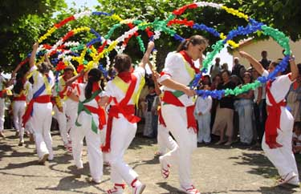

mi primera pagina
noticiás
noticiás
mi letra italica
mi le tranegrita
etiqueta de texto
es una etiqueta comun y corriente, pero su diferencia Va en su atributo
cultural
deportes
economía
judiciales
nacioneles
- lita desordenada
- lunes
- martes
- miercoles
- jueves
- viernes
- sabado
- domingo
- mi lista ordenada
- enero
- febrero
- marzo
- abril
- mayo
- junio
- julio
- agosto
- septiembre
- octubre
- nombiembre
- diciembre
hola eduar
CULTURAL

Lo cultural hace referencia a la cultura, como creación humana, y conjunto de valores, creencias, objetos materiales, ideología, religión y costumbres en general, de una determinada sociedad.
leer mas